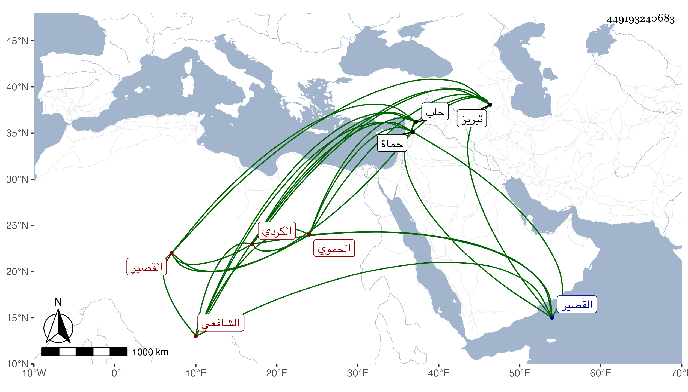

0902Sakhawi.DawLamic.ITO20230111-ara1.EIS1600.449193240683
Biography ID: 449193240683
587
محمد بن داود البازلي الكردي ثم الحموي الشافعي . ارتحل لتبريز فأقام بها نحو عشر سنين واشتغل بها وبرع ثم قدم حلب ثم القصير وخطب بها وتزوج ونقلها لحماة فقطنها وصار مدرسها وشيخها في العقليات مع فضيلة في الفقه وترقى بعد الفاقة وزوج بنته في بيت البارزي وهو الآن حي في سنة خمس وتسعين ويقال إنه جاز الخمسين .
